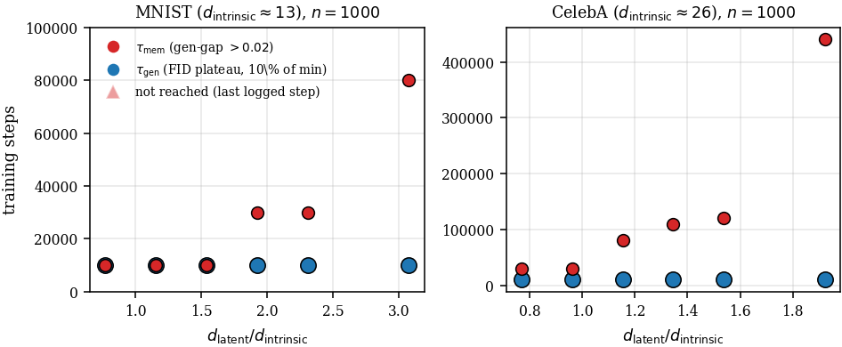
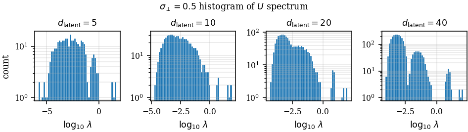

Why giving a diffusion model extra room delays memorization
Latent diffusion models don't diffuse pixels. They diffuse the output of an autoencoder, and that latent space is almost always wider than the data actually needs. A face dataset might have a couple dozen real degrees of freedom and live in a few hundred latent dimensions.
We asked a simple question: what do those extra dimensions do to memorization? (Memorization here means the model starts reproducing its training examples instead of generating new ones.)
The surprising part
If you hold the network fixed and only widen the latent, memorization gets harder, not easier.
On synthetic data where we know the true signal dimension, the fraction of memorized samples after 5M training steps falls from about 30% at 5 latent dimensions to near zero at 40. On real latent spaces the effect shows up as time: above the point where the autoencoder can reconstruct the training images faithfully, the mean time to reach 5% memorization grows 3.6× on CelebA and 1.4× on CIFAR-10.

A mechanism: the noise-dimension bulk
To see why, we used the random-feature spectral theory of Bonnaire et al. (2025) and extended it to data whose covariance is anisotropic, with a few strong signal directions and many weak ones.
In that picture the score network's feature-correlation matrix has a spectrum made of blocks:
- signal modes, shared across the dataset
- a noise-dimension bulk, created by the extra latent directions
- sample-specific modes, which are what memorization needs
- a residual floor
Gradient flow learns modes in parallel, with the time each one is absorbed set by its eigenvalue. The new bulk sits between the signal modes and the sample-specific ones, so it works like a buffer: every extra latent direction adds a mode that has to be absorbed before sample-specific memorization can begin.

What we do and don't know
I care about this part, so here are the limits stated plainly:
- The mechanism is supported in frozen features. We show that widening lowers pre-activation variance and shrinks the nonlinear feature mass, and that holding the variance fixed largely removes the effect. Whether this is the cause inside fully trained networks is not established.
- Memorization is non-monotone in latent width in the workshop version: it first rises as the autoencoder becomes expressive enough to reconstruct the training set, then falls. Image quality is best at intermediate widths.
- We also derived a one-parameter "onset clock" from the frozen encoder's data spectrum that predicts much of the empirical trajectory. Its advantage over dimension-only baselines depends on the dataset.
Why this matters to me
It's a small piece of a bigger question I keep coming back to: why do diffusion models generalize at all? The exact optimal score function memorizes perfectly. Real networks don't, because of how they learn, not because they can't. Spectral timescales give a concrete handle on that. It's also the cleanest connection I've found between my diffusion work and the AI-for-science work, since in molecule and protein generation you are always operating where the training set is tiny and memorization is the failure mode you're trying not to fall into.
I presented the workshop version at ICML 2026 in Seoul, with Ryan Shahbaba, Kevin Peng and Avni Garg as coauthors. The extended ICLR 2027 submission (under review) is with Ryan.